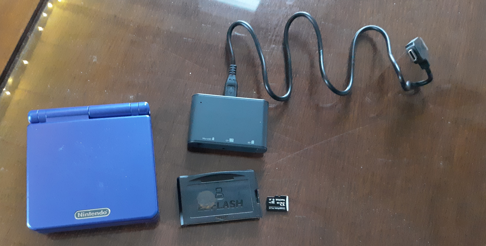

A device allowing you to boot GBA games from a SD card, like the PS-IO for the playstation one. This one's alot easier as you don't have to mod the device for it to work. The only thing you need to do is put a kernel image on the SD card, then hold R1 while booting the GBA. This updates the flash firmware, and only needs to be done once. After that, you just copy GBA files to the SD card, then boot up the device, where you select the ROM to load! Nice and easy
